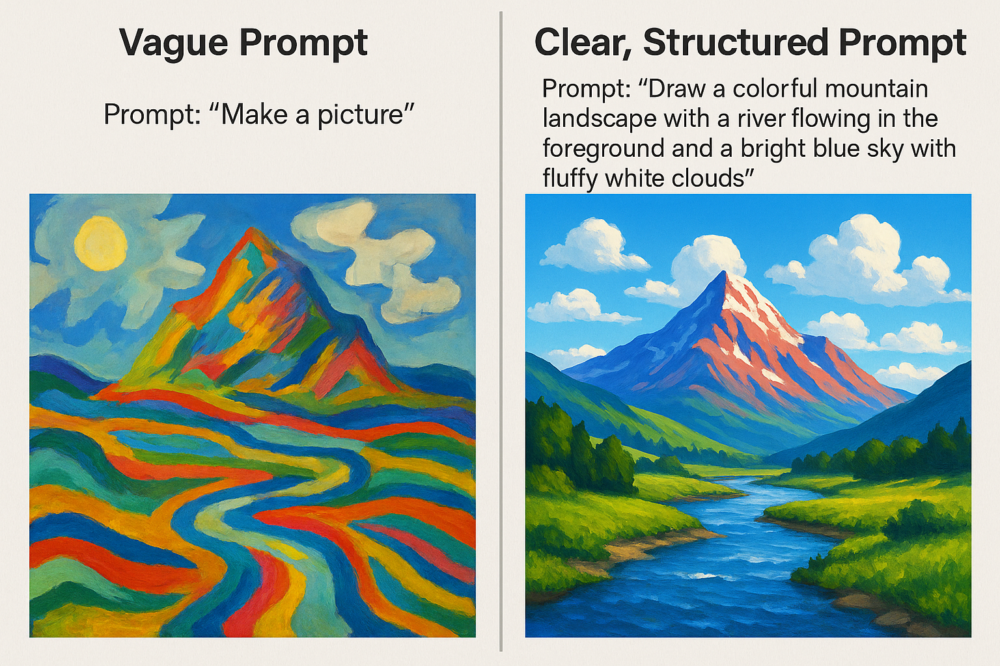
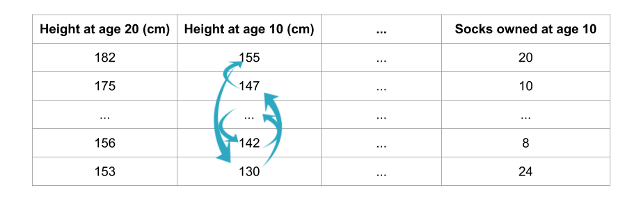
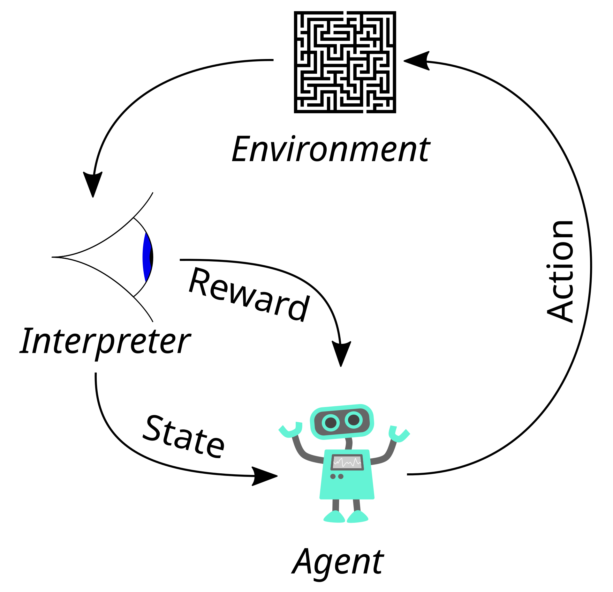
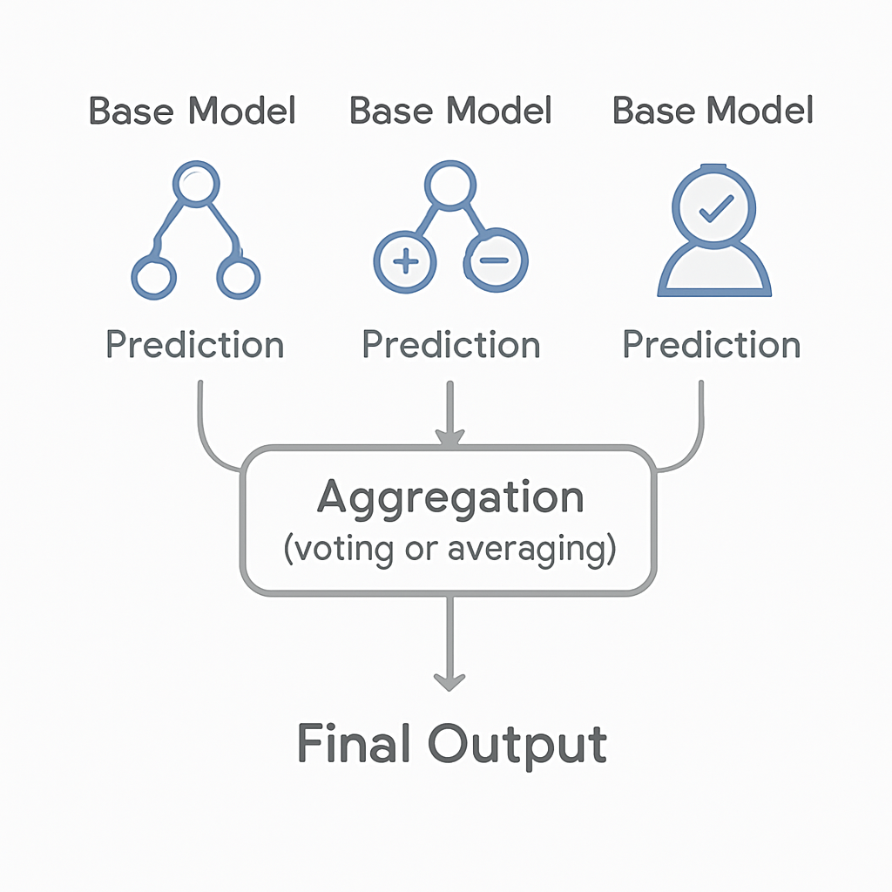

As machine learning engineers/ data scientists, we spend most of our days training models to learn from data, optimize for specific objectives, and generalize to new, unseen situations. We understand concepts like overfitting, bias-variance tradeoffs, and the importance of good training data. We know that the best models aren’t those that memorize the training set perfectly, but those that can adapt and perform well in the real world.
These same principles, it turns out, apply remarkably well (at least in my experience) to how we navigate our own lives.
Life, much like machine learning, is an iterative process of learning from experience, adjusting our approach, and gradually improving our performance. Both domains involve navigating uncertainty, dealing with complex systems, and finding patterns in seemingly chaotic data. Both require patience, persistence, and the wisdom to know when to continue optimizing and when to accept that we’ve reached a good enough solution.
As someone deeply passionate about philosophy, I’ve always wondered if it’s possible to distill these principles into helpful lessons/rules that can be used in day-to-day life, with the final goal of building a good life. So this blog post is my attempt to bridge these two worlds—to take the mathematical elegance and practical wisdom embedded in machine learning concepts and apply them to the messier, more complex optimization problem of living a meaningful life (if there is such a thing).
I have drawn inspiration from Jordan Peterson’s 12 Rules for Life, which is a personal favorite and instrumental in my journey towards creating/finding meaning in life. So I’ve shaped this post as 12 rules. Each rule draws parallels between fundamental ML concepts and timeless life principles, offering a unique lens through which to view personal growth, decision-making, and resilience. I hope this is useful for someone out there.
Why do you need rules and does life even have rules?
Are there really universal rules that if followed lead to a better life, or is this just an arbitrary structure? And, can we say with certainity that there exists a set of generalizable behaviorial patterns that reliably lead to better outcomes in life? Most likely yes.
Regardless, one thing is clear. Having some rules or principles to fall back on gives structure and clarity to our lives, especially in confusing or stressful moments. These guiding lessons help us focus on what matters, shape our decisions, and keep us grounded when life feels overwhelming. They can bring a sense of stability and purpose, making it easier to handle setbacks, and make choices that align with our deepest Self.
Ultimately, they push us to keep going—because, at the end of the day, moving forward is what really matters.
While not every rule applies perfectly to every person or situation, having a set of principles is far from meaningless. They serve more as signposts than strict laws—reminders forged from experience and reflection. These kinds of frameworks help us navigate life with intention, rather than drifting or reacting to every change without a guide. In short, rules aren’t about rigid control; they’re about offering a dependable foundation in a world that rarely offers clear answers.
As a side note, I’d urge everyone reading this to pause and consider: What are your rules for life? What truly matters to you—and why? These are questions worth wrestling with.
Let’s get started!
Rule 1: Failure = Growth
Machine Learning Concept:
One of foundational concepts in machine learning is the concept of loss. Loss in machine learning is a mathematical function that quantifies the difference between a model’s prediction and the actual target value for a single data instance. It provides a numerical measure of how well or poorly the model is performing on that specific example. The goal of training is to find model parameters that minimize the loss (and thus the cost) across all data points. The loss function guides the optimization process during model training by providing a signal for how to adjust model parameters.
For a single data point, the loss function \(L(y, \hat{y})\) measures the discrepancy between the true target value \(y\) and the predicted value \(\hat{y}\):
\[L(y, \hat{y}) = f(y - \hat{y})\]
where \(f\) is a function that quantifies the prediction error.
Common Loss Functions:
Mean Squared Error (MSE) - for regression: \[L(y, \hat{y}) = (y - \hat{y})^2\]
Cross-Entropy Loss - for classification: \[L(y, \hat{y}) = -y \log(\hat{y}) - (1-y) \log(1-\hat{y})\]
Mean Absolute Error (MAE) - for regression: \[L(y, \hat{y}) = |y - \hat{y}|\]
The cost function \(J(\theta)\) is the average loss over all training examples:
\[J(\theta) = \frac{1}{m} \sum_{i=1}^{m} L(y^{(i)}, \hat{y}^{(i)})\]
where \(\theta\) represents the model parameters, and \(m\) is the number of training examples.
Lesson:
Failure is an inevitable companion on any journey toward something meaningful. The very nature of worthwhile pursuits—those that stretch our capabilities and push us beyond our comfort zones—makes them inherently difficult and prone to setbacks. When we venture into uncharted territory, attempting to master new skills or tackle unfamiliar challenges, we will stumble. This is not a flaw in our character but the fundamental mechanics of growth itself.
The sting of failure cuts deep, sometimes leaving us wounded and questioning our abilities. In these moments of disillusionment, it’s tempting to retreat, to abandon our aspirations rather than face the possibility of further disappointment. Yet this is precisely when we must shift our perspective most deliberately.
When we embrace this perspective, failure transforms from a source of shame into a source of wisdom. Each setback becomes a data point in our personal training set, teaching us about our assumptions, our blind spots, and the gap between our expectations and reality. The sting of failure is our internal loss function at work—signaling that something needs adjustment.
Just as a machine learning model becomes more robust through exposure to diverse training examples, we become more resilient and capable through our encounters with failure. The key lies in applying our own loss function through thoughtful reflection. Just as machine learning models use loss functions to quantify the gap between predicted and actual outcomes, we must honestly assess the distance between our expectations and results. This reflective process—examining what went wrong, identifying patterns, and understanding the underlying causes—transforms raw failure into actionable wisdom that guides our future decisions and behaviors.
This doesn’t mean seeking out failure or being careless with our decisions. Rather, it means reframing our relationship with inevitable setbacks. When we fail to land that job, when a relationship doesn’t work out, when a project doesn’t succeed—these aren’t verdicts on our worth but valuable feedback for our next iteration.
Rule 2: Knowledge never get wasted, it gets transferred
Machine Learning Concept:
Transfer learning is a machine learning technique where a model trained on one task is adapted to perform a related but different task. Instead of starting from scratch, the model leverages knowledge gained from its previous training to accelerate learning on the new task. For example, a model trained to recognize cats and dogs can be fine-tuned to identify different bird species, using its existing knowledge of visual features like edges, shapes, and textures.
This approach is particularly powerful because it allows models to achieve better performance with less data and training time on new tasks, especially when the new task has limited training examples available.
Examples of Transfer Learning:
Computer Vision: Pre-trained models like ResNet, VGG, or EfficientNet trained on ImageNet (millions of images across 1000 categories) can be fine-tuned for specific tasks like medical image diagnosis, satellite imagery analysis, or quality control in manufacturing.
Natural Language Processing: Large language models like BERT, GPT, or T5 trained on vast text corpora can be adapted for specific tasks like sentiment analysis, document classification, or domain-specific question answering.
Speech Recognition: Models trained on general speech data can be fine-tuned for specific accents, languages, or technical vocabularies in specialized domains like medical transcription or legal documentation.
Autonomous Vehicles: Models trained to recognize objects in general driving scenarios can be adapted to specific geographic regions, weather conditions, or traffic patterns.
Lesson:
During my chidlhood, my mother instilled in me a profound truth that has shaped my entire approach to learning: “Knowledge is never wasted.” Whenever I questioned the value of what I was studying—wondering if this book, that concept, or these skills would ever prove useful—she would gently remind me that every piece of knowledge we acquire becomes part of our intellectual foundation. Her wisdom has proven invaluable: no learning effort, however seemingly irrelevant at the time, ever truly goes to waste.
In our rapidly evolving technological landscape, where we face countless technical decisions and paradigms shift beneath our feet, this truth becomes our anchor. Whether you learn Python or JavaScript, whether you dive into machine learning or web development, whether you explore a technology that might become obsolete—each choice enriches your intellectual arsenal. Don’t let the paralysis of analysis prevent you from learning—questioning whether this knowledge will prove useful, whether that skill will remain relevant, or whether a particular technology will endure. Like a sophisticated neural network, you will naturally transfer and adapt your accumulated knowledge to new challenges, making each subsequent learning journey faster and more intuitive.
Ultimately, inspiration knows no boundaries and often crosses the lines between different fields. By learning a variety of subjects, you enhance your skills in unexpected ways. When you absorb the right information, it transcends its original context and becomes a powerful tool that can be utilized broadly.
Rule 3: Optimize your prompt for best results
Machine Learning Concept:
An important concept that has emerged in the recent years with the advent of LLMs is Prompt Engineering. It stems from the idea that the quality of the text/output a model generates heavily depends on the instructions/prompt that is given to it. So, prompt engineering is simply is the craft of telling a model exactly what you want and how you want it.
With the current LLMs, it usually includes:
- Stating the task and audience
- Setting the role (e.g., “You are a data scientist”)
- Giving the necessary background (data, definitions, examples)
- Adding constraints (tone, length, citations)
- Specifying the output shape (bullets, JSON, table, steps)

Different models prefer different prompt structures because their training and alignment differ. Some are tuned for system/assistant/user roles while others expect a single instruction. Different tokenizers and model context windows also change how much and how precisely you can include some support tool/function calling and structured outputs. So, identical prompts can behave differently across models.
Optimizing prompts reduces ambiguity and cognitive load, leading to more accurate and consistent answers with cleaner structure and fewer retries. Adding the right context (domain facts, constraints, examples, acceptance criteria), asking for verification steps, and requesting a specific format improves factuality, enables automation downstream (e.g., JSON for parsers), and saves editing time.
Lesson:
The concept of prompt engineering reveals a fundamental truth about communication: the quality and structure of our input directly determines the quality of output we receive. Just as large language models respond differently to well-crafted versus poorly constructed prompts, our interactions with others—and even our own thinking—are shaped by how precisely we articulate our thoughts.
This mirrors one of Jordan Peterson’s most powerful insights from 12 Rules for Life: “Be precise in your speech.” The connection between prompt engineering and precise communication runs deeper than mere word choice. When we frame a problem clearly, provide adequate context, and structure our thoughts coherently, we not only improve others’ ability to help us but also enhance our own understanding of the challenge at hand.
Precision in speech encompasses both the selection of appropriate words and the strategic framing of problems. In our current era— where asking the right questions has become more valuable than knowing the right answers— how we articulate challenges becomes crucial. The way we present a problem often illuminates pathways to its solution. Many of life’s complexities can be resolved more easily when they are framed with clarity and intention.
Therefore, cultivate the art of precise communication. Choose your words deliberately, structure your thoughts coherently, and frame your challenges constructively. Your speech is not merely a tool for conveying information—it is an instrument for shaping reality and unlocking solutions.
Rule 4: Garbage in, garbage out
Machine Learning Concept:
In machine learning, there’s a fundamental principle that governs model performance: data quality determines model quality. No amount of sophisticated algorithms or computational power can overcome fundamentally flawed input data.
How Poor Data Quality Affects Models:
- Noisy data: Random errors and inconsistencies in training data lead to models that make unpredictable mistakes.
- Biased data: Systematic prejudices in the dataset cause models to perpetuate and amplify these biases in their predictions.
- Incomplete data: Missing information creates blind spots where models cannot make accurate predictions.
- Irrelevant data: Training on data that doesn’t represent the actual problem leads to models that fail in real-world scenarios.
The model becomes a direct reflection of its training data—garbage in, garbage out.
Lesson:
Marcus Aurelius in his Meditations famously quoted:
“Our life is what our thoughts make it. We are dyed by the color of our thoughts.”
The modern world bombards us with distractions. Countless social media platforms deploy sophisticated algorithms designed to capture our attention and direct our purchasing decisions. We consume endless streams of information about things that don’t truly matter to us. On top of this, social media platforms are designed to be addictive which makes it really hard to put the phone down.
The danger lies not just in what we consume, but in how seamlessly it infiltrates our consciousness. Social media feeds become our reality filters, news cycles dictate our emotional states, and recommendation engines quietly curate our worldview. We begin to mistake the algorithmic presentation of reality for reality itself. We lose touch with our authentic beliefs and values, developing biases and unrealistic expectations that lead to despair. In severe cases, this constant exposure breeds deep insecurity.
Consider how your morning scroll through social media sets the tone for your entire day. Notice how certain content makes you feel inadequate, anxious, or angry—emotions that linger long after you’ve closed the app. Observe how your conversations increasingly echo what you’ve recently consumed online, rather than emerging from your own deep reflection.
We must guard our mental inputs carefully. This might mean consuming less content, or choosing higher-quality sources deliberately. It could involve creating information-free zones in your day, or actively seeking perspectives that challenge rather than confirm your existing beliefs. Just as machine learning models are fundamentally shaped by their training data—producing outputs that directly reflect the quality, bias, and patterns of their inputs—our minds operate similarly where the information we consume becomes the foundation for our thoughts.
While we pride ourselves on independent thinking, honest self-reflection reveals how profoundly we’re shaped by what we consume. True intellectual independence requires acknowledging this influence and taking conscious control of our information diet.
“I am not sure that I exist, actually. I am all the writers that I have read, all the people that I have met, all the women that I have loved; all the cities I have visited.” - Jorge Luis Borges
Rule 5: Your initial training data does not constrain you forever
Machine Learning Concept:
Machine learning models possess a remarkable capacity for continuous evolution and improvement, fundamentally challenging the notion that learning is a one-time event. Unlike traditional software that remains static after deployment, machine learning models can adapt, refine, and enhance their performance through various sophisticated mechanisms, provided they maintain access to fresh data inputs. There are various techniques which are used to update model weights with exposure to new data:
- Online learning: Models update their parameters incrementally with each new data point, adapting in real-time to changing patterns.
- Fine-tuning: Pre-trained models can be adapted to new domains or tasks with additional training on relevant data.
- Transfer learning: Knowledge gained from one domain can be applied to new, related problems, accelerating learning.
- Catastrophic forgetting mitigation: Advanced techniques allow models to learn new information without losing previously acquired knowledge.
Lesson:
Often, we’re taught to view failure as a natural part of personal growth—a lesson well articulated in Rule 1, which describes how setbacks can catalyze learning and improvement. But it’s important to recognize that not all forms of suffering are the same. Failure usually results from actions and decisions within our control; it’s feedback from the world, pointing to how we might adapt or change course on our journey.
Trauma or unnecessary suffering, however, is different. Trauma strikes from the randomness of the world or circumstances beyond our control—unexpected loss, accidents, or events that overwhelm our ability to cope. These experiences are not invitations to “try harder” or indicators of who we are at our core. Unlike failure, trauma is not a reflection of our actions or character; instead, it’s something that can only be accepted and, with time and support, resolved. You are never defined by these events—they are chapters, not the whole story of your life.
You are not permanently defined by your past experiences, traumas, or mistakes. Just as a model remains capable of perpetual learning when exposed to new training data, you possess an inherent ability to evolve, adapt, and transform throughout your lifetime. The model doesn’t remain forever constrained by its original training set—it integrates new information, adjusts its parameters, and develops more sophisticated understanding. Unlike static software, your mind possesses the remarkable capacity for neuroplasticity, allowing new experiences to literally rewire your neural pathways and update your internal models of reality.
What you always retain, regardless of your past or of circumstances, is your curiosity and agency. So long as you remain curious, you keep the freedom to respond in new ways—to choose how to play the hand you’re dealt, rather than letting history or hardship dictate your path. Curiosity invites growth. It is the key to writing new stories, finding healing, and transforming suffering—not by erasing the past, but by choosing not to let it determine your future.
Rule 6: The right metric leads to the right outcome
Machine Learning Concept:
Throughout my experience of building machine learning models, defining appropriate metrics has consistently emerged as one of the most challenging aspects of the development process. The selection of loss functions and evaluation metrics is critical because these mathematical constructs fundamentally shape what the model learns to prioritize. They act as guiding principles that direct every weight adjustment and parameter modification during the training process.
Common Metrics and Their Trade-offs:
- Accuracy: Simple but misleading with imbalanced datasets—a model that always predicts “no cancer” achieves 99% accuracy if only 1% of patients have cancer, yet provides zero clinical value.
- Business-Specific Metrics: Revenue per user, customer lifetime value, conversion rates—metrics that directly tie to organizational objectives.
- Optimizing for Watch Time: Recommendation model promotes longer content regardless of quality, potentially recommending boring but lengthy videos over engaging shorter ones.
- Optimizing for Last-Click Attribution in MMMs: Over-invests in bottom-funnel activities like search ads while under-valuing brand awareness campaigns.
This issue is a critical challenge in ML known as the Alignment Problem:
The most sophisticated model, trained on perfect data, will still fail if optimizing for the wrong objective. A recommendation system optimized for clicks may promote sensational content that degrades user wellbeing. A hiring algorithm optimized for resume keywords may perpetuate systemic biases while missing genuinely qualified candidates.
Lesson:
What are you optimizing for in life?
This is perhaps one of the most important questions one can ask themselves. As in the case of a machine learning model trained on the wrong objective function, a life optimized for the wrong metrics will inevitably lead you astray. A Greek philosopher, Seneca once wisely observed: “If a man knows not to which port he sails, no wind is favorable.”
Consider how easily we fall into optimizing for society’s default metrics—salary figures, social media followers, material possessions—without pausing to question whether these truly align with our deeper values. Consider the example of a recommendation algorithm optimized purely for engagement time. As time goes on, it might start promoting addictive but ultimately harmful content to the users. Similarly, a life optimized purely for external validation often leads us to hollow achievement and persistent dissatisfaction.
What you measure becomes what you manage, and what you manage becomes who you are. If you only track your net worth, you’ll make decisions that maximize financial gain, potentially at the expense of relationships, health, or personal fulfillment. If you only measure productivity by hours worked, you’ll optimize for busyness rather than meaningful impact.
A better path lies in defining metrics that capture what genuinely matters to you. Perhaps it’s the depth of your relationships, measured not by the number of people you know but by the quality of connection you share. Maybe it’s your contribution to others’ wellbeing, tracked through acts of service rather than professional accolades. Or it could be your personal growth, assessed through challenges overcome and fears faced rather than external achievements accumulated.
There is another powerful aspect of this principle: clearly defined objectives create clarity in decision-making. When you know your true north, difficult choices become simpler. Should you take that high-paying job that requires sacrificing family time? The answer depends entirely on whether you’re optimizing for bank balance or soccer with kids. Both are valid—but clarity about your chosen metric eliminates the paralysis of conflicting priorities.
Like a well-designed loss function that guides a model toward optimal performance, your life metrics should be specific, measurable, and aligned with your true values. They should capture not just outcomes but the process—rewarding the behaviors and choices that lead to lasting fulfillment rather than temporary satisfaction.
Rule 7: Use permutation— experiment relentlessly to uncover life’s true priorities
Machine Learning Concept:
Permutation importance is a powerful technique for understanding which features/ independent variables truly matter to your model’s performance. The process is elegantly simple: you take each feature in your dataset, randomly shuffle its values while keeping everything else constant, then measure how much the model’s performance degrades.
If shuffling a feature causes significant performance drop, that feature is important. If performance barely changes, the feature contributes little value. This approach reveals the actual impact of each input variable rather than relying on assumptions about what should matter.

How Permutation Importance Works:
- Baseline measurement: Record your model’s performance on the original dataset
- Feature shuffling: Randomly permute one feature’s values across all samples
- Performance comparison: Measure how much accuracy, precision, or other metrics decline
- Importance ranking: Features causing larger performance drops are more important
- Repeat systematically: Test each feature individually to build a complete importance profile
The beauty of this method lies in its model-agnostic nature—it works with any algorithm, from simple linear regression to complex neural networks. Unlike other importance measures that depend on model internals, permutation importance directly measures what matters for prediction accuracy.
Real-world example: In a customer churn prediction model, you might discover that recent support ticket volume has higher permutation importance than account tenure, even though intuition suggests tenure should matter more. The data reveals that recent frustration predicts churn better than historical loyalty.
Lesson:
Over the past few years, Bio-hacking has surged in popularity as a trend captivating many with promises of optimization and supercharged living. While I don’t subscribe to the belief that life should be relentlessly systematized or that we must chase every shiny new productivity trick, I do think this bio-hacking wave reveals something valuable: the power of experimentation in shaping our lives. For example, by trying out different wake-up times, you can identify when you feel your best; adjusting your diet by removing caffeine, sugar, or processed foods highlights which nutrients impact your energy; and exploring various work patterns—whether deep work or fragmented tasks, morning or evening sessions—can help you discover when and how you’re most productive. In essence, smart experimentation can help reveal what matters most for your well-being.
Similar to how permutation importance reveals which features truly drive model performance, you can discover what actually matters to your quality of life by systematically experimenting with changes to your routines, habits, and environment. The key insight is to change only one variable at a time while keeping everything else constant, just like in permutation importance testing. This isolates the true impact of each factor rather than getting confused by multiple simultaneous changes. Personal permutation importance forces you to challenge assumptions with data from your own life.
The changes that cause the biggest “performance drops” in your wellbeing, productivity, or happiness when removed—those are your true life features. Guard them carefully and optimize around them, while feeling free to experiment with or eliminate the low-importance factors that don’t actually move the needle.
Rule 8: Gradient descent your way towards meaning
Machine Learning Concept:
Gradient descent powers virtually every modern neural network—from Netflix’s recommendation engine to OpenAI’s GPT models. It is the fundamental optimization algorithm that trains models to make better predictions.
How Gradient Descent Works:
Imagine you’re standing on a mountainside in thick fog, trying to reach the valley below (the optimal solution). You can’t see the destination, but you can feel the slope beneath your feet. Gradient descent works similarly:
- Start somewhere: Initialize your model with random weights and parameters
- Measure performance: Calculate how wrong your current predictions are using a loss function
- Find the slope: Compute the gradient—which direction and how steep the error landscape slopes
- Take a step: Adjust your model’s weights slightly in the direction that reduces error most quickly
- Repeat: Measure performance again, find the new slope, take another step
- Converge: Continue until you reach a point where additional steps don’t significantly improve performance
The “gradient” is essentially the slope of your error surface—it tells you which direction to move your model’s parameters to reduce mistakes. The “descent” refers to following this slope downward toward lower error, like water flowing downhill.
The Learning Rate: This crucial hyperparameter determines how big steps to take. Too large, and you might overshoot the optimal solution and bounce around chaotically. Too small, and training takes forever or gets stuck in suboptimal positions. Finding the right learning rate is like choosing the perfect walking pace—fast enough to make progress, careful enough to not miss your destination.
Real-world example: Training a neural network to recognize cats in photos starts with random weights that produce nonsensical predictions. Gradient descent gradually adjusts millions of parameters, making the network slightly better at distinguishing cat features with each iteration, until it achieves high accuracy.
Lesson:
Everyone grows up with a dream of becoming something—a doctor, an astronaut, a musician. In our early part of life, we craft idealized versions of our future selves, envisioning a singular, all-defining purpose. Yet as we mature and gain new experiences, we often realize that these ambitions were shaped more by childhood fascination than by lasting conviction. Confronted with this truth, many people abandon the search for meaning altogether, stalled by the daunting expectation of finding that one “right” path.
But this isn’t the only way forward. Instead of waiting for the perfect calling to reveal itself, it’s far better to take the next small step in the direction of your curiosity. This is what gradient descent teaches us well. The pursuit of meaning in life closely resembles this process. Much like how a machine learning algorithm refines itself—adjusting weights incrementally with each pass to achieve better results—we, too, can move forward by consistently following our curiosity.
When it comes to your career, you don’t need a flawless 20-year plan. Start where you are, rely on your current skills and interests, and seek out the next step that feels both intriguing and manageable. Each experience provides feedback—your own “gradient signal”. Use this feedback to steer toward greater fulfillment, recalibrating as you learn more about yourself and what brings you satisfaction.
In this sense, life is less like solving one big equation and more like running an ongoing search function, steadily updating your parameters as you gather new insights. Resist the urge to be rigid or overly attached to a single role or notion of success. Meaning and purpose will evolve; let them, and let yourself grow with them.
Rule 9: Your nearest neighbors determine your life, so choose wisely
Machine Learning Concept:
The k-nearest neighbors (k-NN) algorithm is a straightforward and intuitive machine learning method used for classification and regression tasks. It works by finding the k most similar data points—its “neighbors”—to a given example and making predictions based on their values. Commonly used in tasks like image recognition and email filtering, k-NN relies on the idea that similar items tend to have similar outcomes, making it a simple yet powerful tool for pattern recognition.
How K-Nearest Neighbors Works:
- Distance calculation: Measure how similar the new data point is to all existing points using metrics like Euclidean distance.
- Find neighbors: Identify the k closest points in the feature space.
- Vote or average: For classification, the neighbors “vote” on the prediction; for regression, their values are averaged.
- Make prediction: The majority class or average value becomes the prediction.
Lesson:
In machine learning, the k-nearest neighbors algorithm makes predictions based on the closest data points, operating on the fundamental assumption that similar things behave similarly. This simple idea mirrors a profound truth about human nature: you inevitably become similar to the people you spend the most time with. Your “nearest neighbors” in life—friends, colleagues, family, even the content you consume—act as your prediction algorithm for what’s normal, possible, and desirable. The influence operates across every dimension of life: if your closest friends are pessimistic or satisfied with mediocrity, that becomes your baseline; if they prioritize health, learning, and ambition, their energy becomes contagious and shapes your default patterns.
Social influence operates as a powerful but invisible force, quietly calibrating your sense of what’s achievable and acceptable. Like selecting the optimal k value in machine learning—where too few neighbors make you vulnerable to outliers and too many dilute specificity— your inner circle requires careful curation. Fortunately, there are some heuristics that are very useful to this end. Foremost, quality trumps quantity: a smaller group of high-quality relationships proves far more valuable than a large network of shallow connections. Secondly, seeking diversity by choosing neighbors who bring different perspectives, skills, and experiences helps you challenge your pre-existing notions and broaden your understanding. Finally, prioritizing growth-oriented people who challenge you to become better and move forward is key for ensuring that you do not settle for less in life and dream big.
Lastly, remember that influence flows both ways: while you’re choosing your neighbors, you’re simultaneously someone else’s nearest neighbor. Strive to be the kind of person others would benefit from having in their inner circle, recognizing that your own growth and character development ripple outward to influence others in your network. Reach out to that friend who requires an extra push to unlock their potential, or that bestie who is struggling in life and can benefit from your perspective.
Rule 10: Feature engineer your experiences to develop a nuanced perspective
Machine Learning Concept:
The development of a useful, accurate and robust ML system starts long before model selection and algorithmic tuning. It starts with collecting, cleaning and organizing the data in a format that represents the underlying patterns of the domain in the most meaningful way. This process of transforming raw data into meaningful features that machine learning algorithms can better understand is called Feature engineering. It involves creating new variables from existing data, transforming and scaling features, encoding categorical values, handling missing or outlier data, extracting the most relevant information, and selecting the subset of variables that provide the best predictive power. This process is often considered more art than science— the same dataset can yield vastly different model performance depending on how cleverly the features are engineered.
Principles for good feature engineering:
- Domain knowledge: Understanding what the data represents and what patterns might be meaningful
- Transformation: Converting raw measurements into more informative representations (e.g., turning birthdates into age, or extracting day-of-week from timestamps)
- Combination: Creating new features by combining existing ones (e.g., ratios, differences, interactions)
- Selection: Choosing which features are most relevant and removing noise or redundancy
- Scaling and normalization: Ensuring features are on comparable scales so algorithms can process them effectively
- Adding external data: Combining raw data with external sources to create better features.
Examples of Feature Engineering:
- Text data: Converting raw text into word frequencies, sentiment scores, or semantic embeddings
- Time series: Extracting trends, seasonality, moving averages, or lag features from temporal data
- Images: Edge detection, color histograms, or texture features from pixel data
- Categorical data: One-hot encoding, embedding representations, or frequency-based encodings
In most cases, raw data is rarely in the optimal format for learning. Feature engineering asks: “How can we represent this information in a way that makes the underlying patterns more obvious?”. It’s about finding the right lens through which to view the data.
Lesson:
The core of feature engineering is this: Don’t just accept raw input—refine it, transform it, ask questions and extract meaning. The careful transformation of raw data into insightful features is what makes the difference between a mediocre and an exceptional model. In life, the same principle applies to how we process our experiences, emotions and challenges. Events in life are like raw inputs to a ML model. Your perspective, or “cognitive feature engineering,” turns these events into something meaningful. Two people can experience the same situation, but their “engineered features”—their interpretation, framing, and context-building — determine what they learn, how they react, and how they grow.
The world often rewards and amplifies black-and-white thinking, especially on social media or in heated debates. But, better decision-making comes from resisting this push towards artificial simplicity. In practical terms, applying cognitive “feature engineering” to your experiences means developing a flexible, non-biased, nuanced way of thinking about issues. This means practicing multivariate thinking: rarely is there a single cause for a complex situation. Instead, consider all the variables—timing, stress, personal background, unseen constraints—that influence outcomes. Cultivating perspective-shifting habits, like the steel man approach, helps you empathize with others and break free from reductive “good vs. bad” thinking. Much like constructing new features to improve your model, build richer mental models to interpret events more accurately and compassionately.
Rigid thinking locks you into extremes; nuanced thinking lets you respond to life’s complexity with clarity and wisdom. In business, you don’t declare a project a failure based on one metric; you dissect timing, competition, positioning, and market trends. In relationships, the meaning of an argument shifts when you notice the unseen “features”—fatigue, stress, past baggage, or miscommunication. In politics or culture, binary labels stop the conversation; a multi-dimensional analysis brings empathy, creative solutions, and social progress.
Rule 11: Good life = good habits reinforced
The Machine Learning Concept:
Reinforcement Learning (RL) is a type of machine learning where an agent learns to make decisions by interacting with an environment. Unlike supervised learning (which learns from labeled examples) or unsupervised learning (which finds patterns in data), RL learns through trial and error, receiving feedback in the form of rewards or penalties.

Key Components in RL:
- Agent: The decision-maker (in life, this is you)
- Environment: The world the agent operates in (your circumstances, relationships, work)
- Actions: Choices the agent can make (your daily decisions and behaviors)
- States: Current situation or condition (where you are right now)
- Rewards: Feedback signals that indicate how good an action was (positive or negative consequences)
- Policy: The agent’s strategy for choosing actions (your behavioral patterns and decision-making frameworks)
The Learning Process: The agent takes actions in the environment, receives rewards (positive or negative), and updates its policy to maximize cumulative reward over time. This creates a feedback loop: action → consequence → learning → better action.
Reward Functions: These define what the agent is trying to optimize. In ML, reward functions must be carefully designed because the agent will find ways to maximize whatever you reward, even if it leads to unintended consequences (reward hacking). Poor reward design can lead to agents optimizing for the metric rather than the underlying goal.
Exploration vs Exploitation: RL agents face the fundamental tension between exploiting known good strategies versus exploring new possibilities that might be even better. Too much exploitation leads to getting stuck in local optima; too much exploration prevents capitalizing on what you’ve learned.
Lesson:
There is a Zen Buddhist proverb which goes as follows: How you do anything is how you do everything. Each day we perform countless small actions, some as a part of a well-established routine while others emerging from the chaos of our lives- waking up at a certain time, going to the gym, choosing what to eat, etc. Reinforcement Learning emphasizes that these daily actions are not isolated incidents, but episodes in a continuous feedback loop, shaping who we eventually become. Every habit, good or bad, is reinforced by small rewards or setbacks encountered along the way. Similar to how a reinforcement learning agent gradually masters a task through countless trial-and-error episodes, our micro-decisions and routines compound to build our character and skills over time. Excellence is not achieved through grand, one-off efforts; instead, it’s the result of consistently reinforcing beneficial behaviors, one small step at a time. This is where self-discipline takes over, eventually turning habits into fate and patterns of thought into personality.
The crucial dilemma between exploration and exploitation finds deep resonance in life. Focusing solely on what’s already rewarding is tempting, but growth comes from sometimes venturing outside our comfort zones to try new strategies, even if they might not pay off immediately. This balance—knowing when to exploit what works and when to explore fresh approaches—is at the heart of meaningful self-improvement. Likewise, the discipline to delay gratification, investing in future rewards over instant pleasure, is what creates a flourishing life with sustainable contentment.
Discipline, delayed gratificaton and reinforcement of good patterns, in the end, are the building blocks of a good life. By consciously choosing which patterns to reinforce, and which to unlearn, we gradually optimize not for fleeting outcomes, but for long-term gains. Remember: how you do anything is how you do everything. The consistency with which you tackle small actions trains your mind and spirit for bigger challenges, making your chosen actions today the re-inforcement data for your future self.
Rule 12: Ensembling always beats standalone models
Machine Learning Concept:
Ensembling is a technique in machine learning where we combine multiple models to produce a single, superior predictive model. The idea is that by aggregating the predictions of several models, the ensemble can achieve better performance than any individual model alone. This is because different models may capture different patterns or aspects of the data, and their combination can lead to a more robust and accurate prediction.
Different Types of Ensemble Methods:
Bagging (Bootstrap Aggregating): This method involves training multiple versions of a model on different subsets of the training data (created through bootstrapping) and then averaging their predictions. Random Forest is a popular example of a bagging technique.
Boosting: Boosting focuses on training models sequentially, where each new model attempts to correct the errors of its predecessor. The final prediction is a weighted sum of all models. Examples include AdaBoost and Gradient Boosting.
Stacking: In stacking, multiple models (often of different types) are trained, and their predictions are used as inputs to a higher-level model, which makes the final prediction. This meta-model learns how to best combine the base models’ predictions.
Voting: This is a simple ensemble method where multiple models are trained, and their predictions are combined through a majority vote (for classification) or averaging (for regression).

Ensembling leverages the strengths of different models, reduces the risk of overfitting, and often results in improved generalization to new data. It is a powerful strategy in both machine learning competitions and real-world applications, where achieving the highest accuracy along with robustness is crucial.
Lesson:
The world is undoubtedly full of complex challenges that require extensive collaboration among many individuals. These challenges range from designing the tiny chips that power our computers to addressing the global issue of climate change. In fact, one key reason humans have thrived on Earth is our capacity to work together with strangers to tackle challenges and create net positive outcomes for everyone involved. All this to say, the essence of solving big problems and leading a fulfilling life lies in collaboration, not competition. When we join forces with others, we can tackle complex problems that are beyond the reach of any single individual. Collaboration allows us to combine our unique skills, ideas, and perspectives, leading to innovative and effective solutions. This is essentially what ensembling is about as well.
Ensembling, fundamentally, is the practice of combining multiple models in machine learning to create an outcome that is better than what any single model could achieve. The magic here is diversity—each model sees the world a bit differently, has its own strengths and blind spots, and makes unique mistakes. When we aggregate their predictions, their individual errors often cancel each other out, while their collective strengths accumulate. Beyond the realm of algorithms, this principle finds a powerful parallel in teamwork and collaboration. Think about the swift, global collaboration among scientists to develop the COVID-19 vaccines. It was only possible because research labs, governments, and manufacturers pooled their insights, resources, and expertise. Similarly, orchestras, sports teams, and even open-source software projects like Linux exist as ensembles of talent, succeeding because they harness not just the brightest stars, but the intricate, dynamic interplay between them.
What ensembling and collaboration truly teach us is humility: that none of us have a monopoly on truth or ingenuity, and that we are all subject to our own cognitive “overfitting”. In a workplace, employees who collaborate openly, share credit, and invite dissenting opinions produce more innovative, durable solutions than siloed, competitive individuals. In life, families and communities that bridge differences and draw on everyone’s gifts are more resilient and adaptive. Just as ensemble models reduce error and generalize better to new situations, collaborative human endeavors are more likely to face new challenges with creativity, empathy, and collective wisdom.
Building effective ensembles, whether in machine learning or in life, involves choosing diverse models or people, seeking out collaborators with different backgrounds, thinking styles, and areas of expertise. It’s crucial to weight contributions appropriately according to each person’s expertise while ensuring that everyone is heard. The focus, ultimately, should be on ensemble performance, measuring success by collective outcomes rather than individual recognition.
In every context, the lesson is clear: collaboration doesn’t just add up our contributions—it multiplies them, creating outcomes that none of us could have predicted or achieved alone.
Conclusion:
While writing this post, my aim was to bridge the gap between machine learning and lessons from life into a set of practical, relatable rules. Whether you’re an engineer, a student, or simply someone navigating the complexities of the modern world, these insights are meant to serve as a guidepost, blending technical wisdom with life advice.
Above all, I hope readers walk away feeling encouraged to think critically, embrace a growth mindset, and dream big. The journey in both life and technology is rarely straightforward, but with perseverance, curiosity, and a healthy risk appetite, we can engineer a good life. If you find even one rule here that sparks reflection or positive change, then this post has served its purpose.
References:
[1] 12 Rules for Life: An Antidote to Chaos
[2] 12 Rules for Life: HealthyGamer GG
[3] It’s All Training Data: Using Lessons from Machine Learning to Retrain Your Mind
[4] What Machine Learning Can Teach Us About Life - 7 Lessons
[5] AI Metaphors We Live By: The Language of Artificial Intelligence